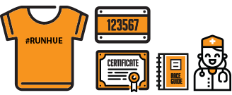

Địa điểm nhận Kit: cột cờ Phu Văn Lâu, tp Huế.
Thời gian nhận Kit: ngày 01 tháng 9 năm 2018
Thời gian nhận Kit: ngày 01 tháng 9 năm 2018
LÀM THẾ NÀO ĐỂ CÓ RACE-KIT
- Hãy mang theo email xác nhận và giấy tờ tùy thân của bạn (CMND/Giấy khai sinh...) để lấy bộ kit của bạn trong thời gian cho phép.
- Chúng tôi sẽ cố gắng hết sức để cung cấp cho tất cả các vận động viên T-shirt đúng kích cỡ, nhưng trong trường hợp kích cỡ của bạn không còn, xin vui lòng chọn một kích cỡ khác.
*LƯU Ý:
- Xin vui lòng thông báo cho Ban tổ chức thông qua email ttyen@hueic.edu.vn nếu bạn không thể đến để lấy bộ Race Kit vào ngày 01 tháng 9 năm 2018.
- Đối với vận động viên 22KM và 10KM, vui lòng gửi giấy ủy quyền cho bạn bè của bạn (Tải về tại đây) và CMND/Giấy khai sinh… có ảnh nếu bạn nhờ người lấy hộ Race Kit cho mình.
- Trong trường hợp nhờ nhận hộ race kit, bên cạnh giấy uỷ quyền của người đăng kí, email xác nhận và giấy tờ tùy thân của bạn, người nhận hộ cũng phải mang theo giấy tờ tùy thân của mình.
QUYỀN LỢI
Gửi đồ - Dịch vụ hỗ trợ - Áo chạy - Số hiệu chạy - Chứng nhận điện tử - Túi - Huy chương - Thông tin cuộc thi - Thực phẩm hỗ trợ - Chăm sóc y tế
Gửi đồ - Dịch vụ hỗ trợ - Áo chạy - Số hiệu chạy - Chứng nhận điện tử - Túi - Huy chương - Thông tin cuộc thi - Thực phẩm hỗ trợ - Chăm sóc y tế

Áo chạy - Số hiệu chạy - Chứng nhận điện tử - Thông tin cuộc thi - Chăm sóc y tế
Áo chạy - Số hiệu chạy - Chứng nhận điện tử - Thông tin cuộc thi - Chăm sóc y tế
* Đối với vận động viên 10km: Huy chương sẽ được trao cho vận động viên hoàn thành đường chạy trong mốc cut-off time.
* Đối với người tham gia cự ly 5KM sẽ được trao giấy chứng nhận khi hoàn thanh đường chạy.
* Chứng nhận điện tử sẽ được đăng tải trên trang kết quả ít nhất 2 tuần sau giải chạy.
* Hỗ trợ y tế sẽ được trang bị tại một số điểm di động trên đường chạy.
* Thực phẩm hỗ trợ năng lượng sẽ được cung cấp tại 1 số điểm dọc đường chạy.
* Thông tin cuộc thi sẽ bao gồm các thông tin chung về cuộc thi (bản đồ đường chạy, lịch trình, thông tin chung...)
* Số BIB luôn phải đính trước áo người chạy.
- Race day: SEPTEMBER 2nd 2018
- Thời gian: 07:00 AM
- Ðịa điểm cột cờ: Phu Văn Lâu, Tp. Huế